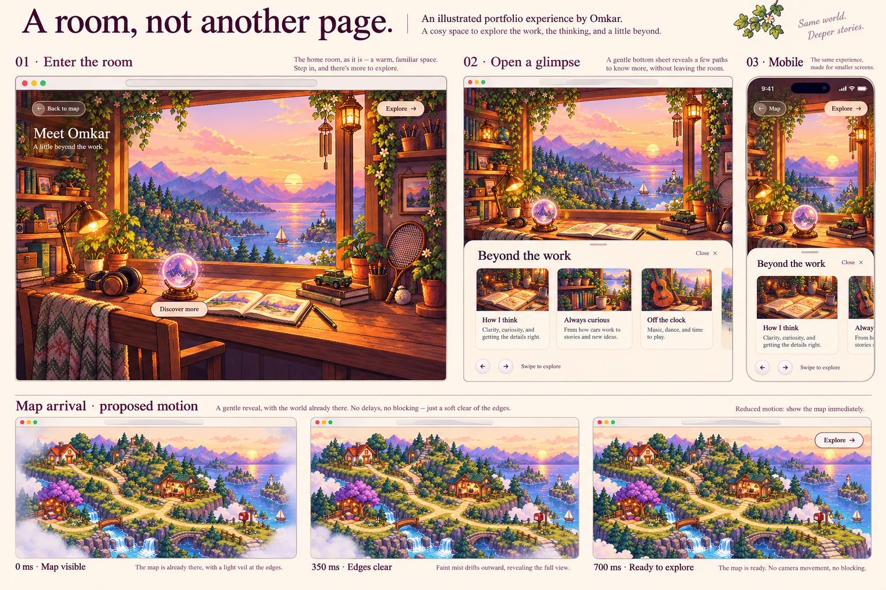
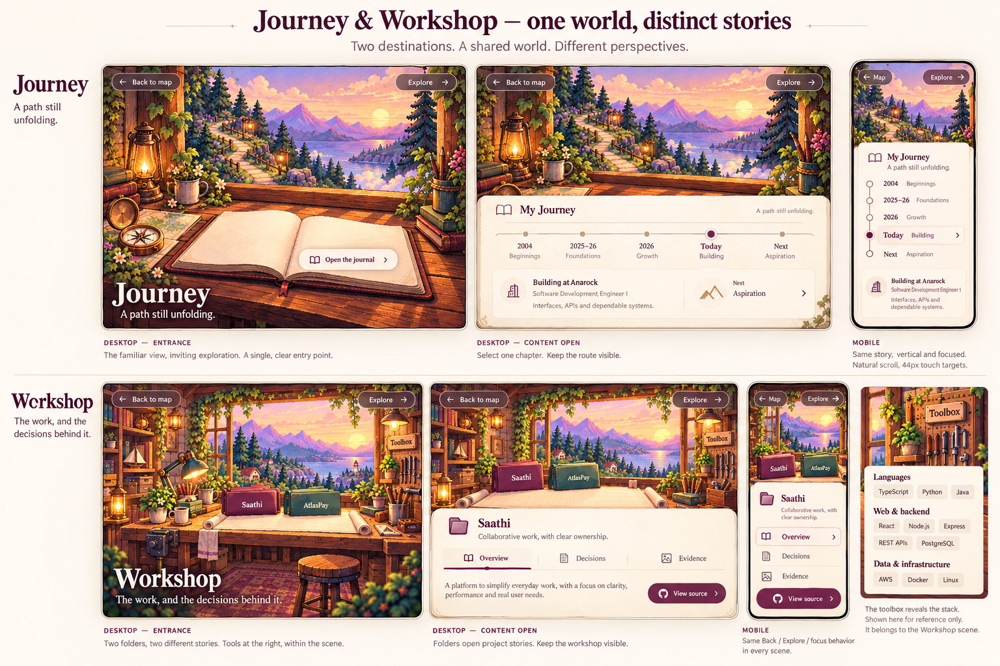
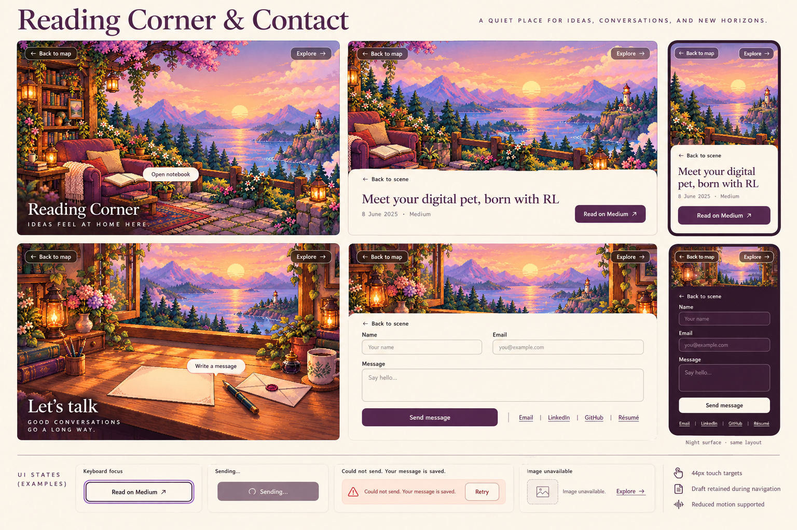

One illustrated world, every destination considered
28 October 2026 · Design references and implementation contract
Home's visual direction is approved. The remaining compositions below are proposals for review. These static boards do not establish implementation, animation performance or accessibility compliance. No application code is changed by this reference package.
This reference supersedes older proposals for four interest sections, Places naming, manual clock controls and music controls. Use Explore, automatic local-time lighting and the image-led destination direction. Preserve existing content facts and URLs.

Home and map: approved visual direction. Proposed personal copy still needs editorial approval.

Journey and Workshop: proposed composition. Generated toolbox labels are illustrative, not a validated skills inventory. Use the existing verified source content when implementing.

Reading and Contact: proposed composition. Form labels and success language must follow the existing form/API contract. Dark form appearance illustrates the shared night palette; it does not imply nighttime artwork has already been authored.
Every destination has one clear purpose
| Place | Scene action | Revealed content |
|---|
| Map | Landmark or Explore | Destination scene; direct navigation remains available without art. |
| Meet the Person | Crystal ball | Horizontal personal cards; no employer introduction or fabricated anecdotes. |
| Journey | Open journal, choose milestone | One dated account; distinguish internship, employment and aspiration. |
| Workshop | Saathi / AtlasPay folder, Toolbox | Overview, decisions, evidence and source; technical toolkit belongs here. AgentArena stays excluded. |
| Reading Corner | Open notebook | One populated, dated Medium article; no empty shelves or invented reading history. |
| Contact | Letter | Direct contact links and optional form. Links must also be discoverable without completing the form. |
Shared interaction contract
- Keep Back to map and Explore in consistent positions. A detail surface has Back to scene. Escape and browser Back dismiss the deepest active view first. Never stack dialogs.
- Pointer hover reveals feedback; touch and keyboard get persistent, readable action labels. At least 44px primary touch targets. Never require finding an invisible object.
- Opening details retains scene context. Use opaque ivory/plum reading surfaces; glass is limited to small controls. Long content scrolls naturally with Back always reachable.
- Restore focus and parent scroll/card selection when returning. Keep URL state authoritative; preserve existing hashes and legacy routes, including #skills to Workshop.
- Contact drafts survive navigation within the mounted app session. Validate inline, block duplicate sends while pending, retain input on error, and announce only backend-confirmed success. Refresh persistence is not promised.
- Mobile uses explicit scene composition and verified hit regions, not a naive desktop crop. Keyboard and 200% zoom remain usable. Images carry atmosphere; HTML carries all essential text and controls.
- Map reveal is proposed at 700ms: light edge mist, clear landmarks from the start, no readiness delay. Reduced motion removes reveal and orb pulses. Pause optional effects when hidden or offscreen.
- Automatic local-time scene changes never reset navigation, scroll or drafts. Do not claim astronomical sunrise accuracy. Until authored variants exist, do not pretend flattened interior lamps or clouds are independently animated.
Design to code
| Responsibility | Implementation decision |
|---|
| Routing and state | Extend existing map-state.ts and shell ownership; no second router or state library. |
| Scene composition | Shared scene layout with artwork-aligned object controls. Keep stable image geometry or explicitly defined mobile geometry. |
| Reading surfaces | Reuse native dialog lifecycle and installed Framer Motion for restrained opacity/transform transitions. One focus boundary. |
| Horizontal cards | Reuse installed Embla/carousel for arrows, swipe and retained position. No autoplay. |
| Orb and mist | Start with CSS opacity/transform and authored decoration. No app-wide Three.js. Consider an isolated shader only if the approved visual requires it and mobile profiling supports it. |
| Contact | Reuse existing ContactForm and API validation, timeout and retry handling. Preserve mounted draft state when splitting scene components. |
| Assets | Reuse existing illustrations with Next Image and appropriately sized responsive derivatives. Load active scene first; do not eagerly fetch every large illustration. |
| External components | Select effects by interaction purpose, accessibility, bundle cost and license. React Bits Pro source requires verified access; do not reproduce gated code from its demo. |
Before calling implementation complete
- Approve the remaining scene compositions and personal wording; verify generated mockup text against source content.
- Resolve the inherited obsolete interest-menu test and establish a clean focused navigation test baseline.
- Build the shared scene/surface lifecycle once, then implement each destination and compare it with its reference.
- Check all place/detail deep links, Back/Escape, focus restoration, contact draft retention and failed images.
- Visually inspect desktop, tablet, 360px mobile, night surfaces, keyboard focus, long text and reduced motion. Verify hotspot alignment after resizing.
- Profile a production build on representative mobile hardware before claiming 60fps. Test contact success/failure separately from actual delivery.
Image-generation provenance
Built-in image generation used the existing Home/Map, Journey/Workshop and Reading/Contact artwork as references. Prompts requested image-led desktop entrance, open-content and mobile states, the warm ivory/plum system, consistent Back/Explore controls, authentic content, and no music or manual time controls. The Home board additionally requested a 0/350/700ms edge-mist storyboard; the Contact board requested focus, pending, failure, image fallback and night-surface examples. Generated wording and ornamentation remain illustrative, not authoritative content or independently editable assets.